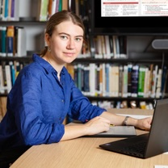
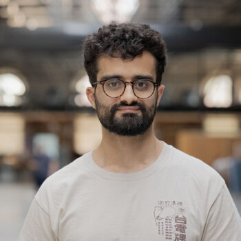
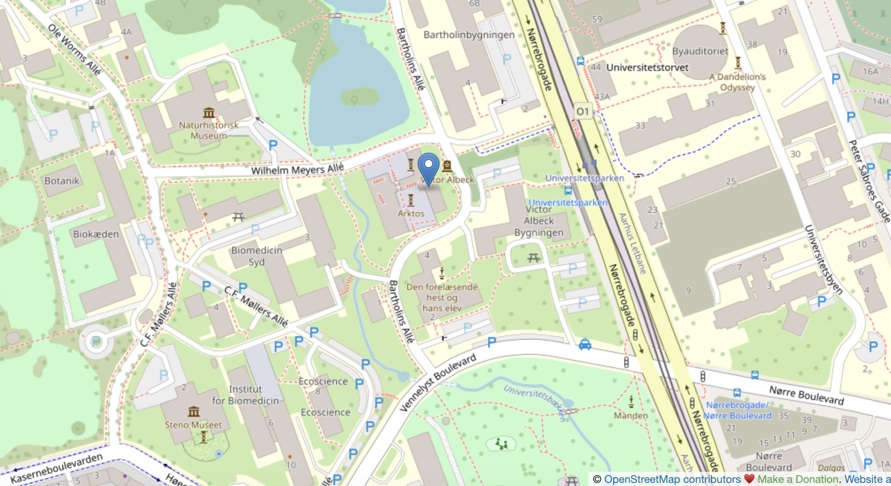
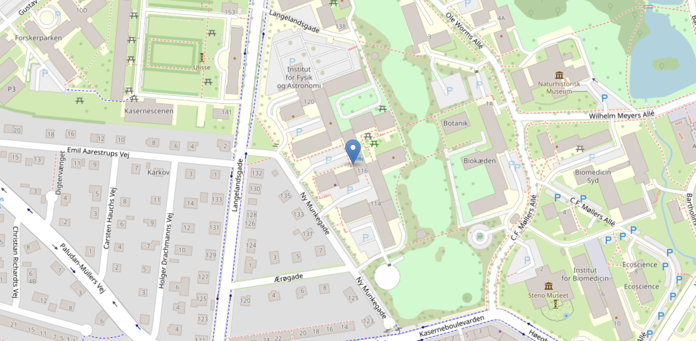
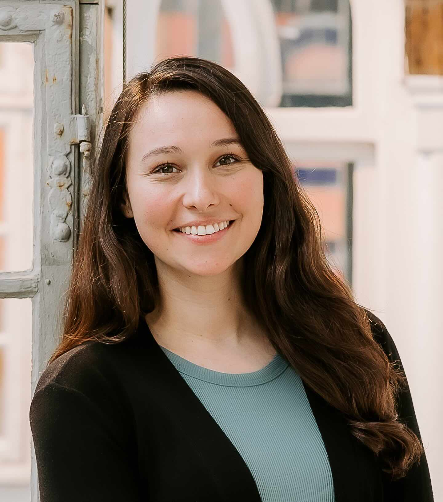
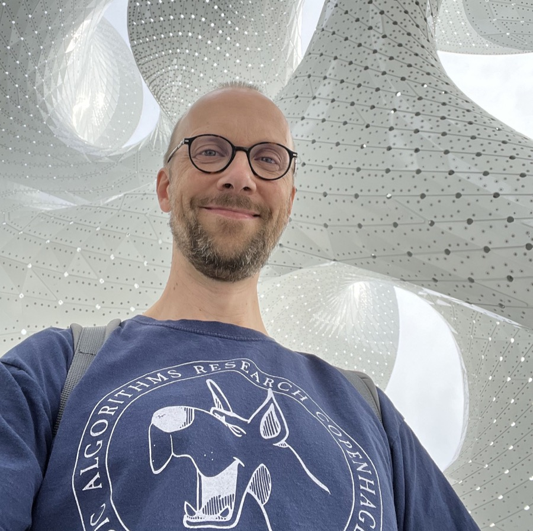
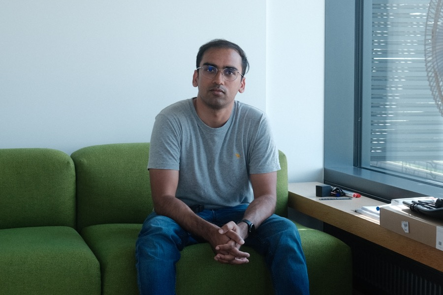

Christoph Lampert
Professor, Institute of Science and Technology Austria
Workshop 2
Workshop 2 is part of the Data Privacy in Machine Learning P1 program. It will focus on privacy in limited-trust settings, with particular interest in approaches that bring together ideas from differential privacy, decentralized learning, secure computation, and cryptography.
The program includes invited talks by Christoph Lampert, Christian Rechberger, Edwige Cyffers, Christian Weinert, and Tamer Mour, as well as contributed talks selected through the call for contributions. The first day of the workshop will be a day of tutorials on differentially private machine learning and cryptography by Tamalika Mukherjee, Tamer Mour, and Hannah Keller.
Registration deadline: October 28, 2026
Cost: 675 DKK
Professor, Institute of Science and Technology Austria
Professor, TU Graz

CNRS Researcher, Lamsade at Dauphine University in Paris
Associate Professor, Royal Holloway, University of London

Principal Investigator, The Italian Institute of Artificial Intelligence (AI4I)
Research Group Leader, Max Planck Institute for Security and Privacy
We are seeking submissions for 20-30 minute talks on topics related to privacy-preserving machine learning and privacy in distributed settings. The workshop will not have a poster session.
Topics of interest include:
Location, Monday and Tuesday (November 2-3): William Scharff Audiorium (Building 1253, Room 317), Bartholins Alle 3, 8000 Aarhus C

Open in OpenStreetMap · Map data © OpenStreetMap contributors
Location, Wednesday (November 4): Auditorium G1 (Building 1532, Room 116), Ny Munkegade 118, Aarhus C

Open in OpenStreetMap · Map data © OpenStreetMap contributors


